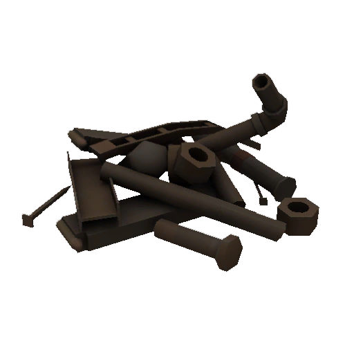
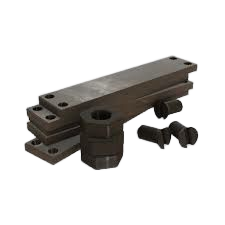
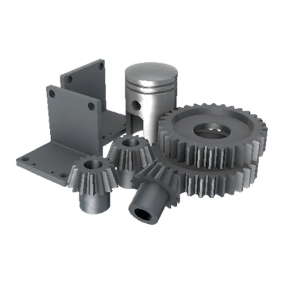
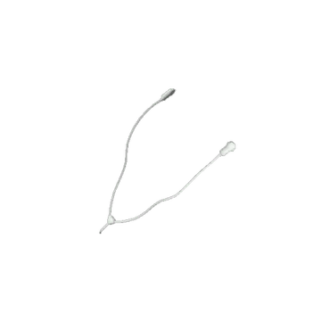

Introdução a Economia
A economia do team fortress 2 começou como o sistema econômico da vida real, sendo descendente do escambo. Seu começo se deu pelo sistema de drop de itens, logo após, tivemos a implementação do sistema de trocas entre players e por fim a criação de uma padronização das "moedas" que padronizariam as trocas. As nossas moedas atuais são: o metal de sucata, o metal recuperado, o metal refinado e a chave
Embora estejamos falando de trocas dentro do jogo, existem as trocas com instituições (ou sites de troca) que usam dinheiro de verdade como moeda de troca(existe um site em que os itens valem pontos, porém é uma excessão). Antigamente ainda tinhamos como moeda de troca os fones de ouvido.
História das moedas
Para começar a falar das moedas, vamos começar falando sobre o sistema de obtenção de itens, pois o sistema de fabricação de itens(sistema progenitor dos metais) foi implementado depois. A chave e os fones de ouvido também foram implementos depois do sistema de obtenção de itens também. No inicio, a obtenção de itens se dava por realização de conquistas de classes especificas(scout, pyro, heavy e medic), logo após foi implementado um sistema substituto, muito exigente, para acabar com a possibilidade de fazer grinding(uso de programas para cumprir conquistas automaticamente). Ao perceber que muitos jogadores não recebiam itens por longos periodos de tempo, criaram um novo sistema 2.0 para tornar as exigencias mais palpáveis e recolocaram o sistema de conquistas novamente. Embora os chapéus também possam ser obtidos via obtenção, é uma chance bem pequena. O sistema de fabricação foi implantado posteriormente com o intuito de ser mais uma opção de obtenção de itens, já que a mochila(inventário) do jogador era bem limitada e também para dar um uso aos itens que um jogador não usava e excluia. As chaves foram implementadas por um sistema de caixas de itens aleatórios, onde as chaves são compradas no mercado Mann co., elas são usadas até hoje como moeda de troca tendo em vista o seu uso e à sua segurança(já que outras chaves comemorativas retornavam à chave após os eventos. Apenas algumas). Os fones de ouvido por sua vez são provenientes de uma comemoração da entrada do team fortress 2 aos sistema MACos. Seu uso como moeda de troca na época em que forá utilizado se dava pelo fato de que as mochilas eram limitadas e era necessário um item de valor que ocupasse menos espaço. O sistema de trocas foi implementado em 2011, portanto, o conceito de economia no team fortress 2 só se deu em meados de 2012.
- Sucata
- implementado em 17 de dezembro de 2009
- vale 0.02-0.03 dolares
- vale 0.1-0.15 reais
- vale 0.33 recuperados
- vale 0.11 refinados
- porcentagem muito baixa de chave
- porcentagem muito baixa de fones de ouvido
- Recuperado
- implementado em 17 de dezembro de 2009
- vale 0.06-0.09 dolares
- vale 0.3-0.45 reais
- vale 3 sucatas
- vale 0.33 refinados
- porcentagem muito baixa de chave
- porcentagem muito baixa de fones de ouvido
- Refinado
- implementado em 17 de dezembro de 2009
- vale 0.18-0.27 dolares
- vale 0.9-1.35 reais
- vale 3 recuperados
- vale 0.99 sucatas
- vale 0.01 chave
- porcentagem muito baixa de fones de ouvido
 Chave
Chave
- implementado em 30 de setembro de 2010
- vale 1.5 dolares
- vale 10 reais
- vale 700 sucatas
- vale 250 recuperados
- vale 70 refinados
- vale 0.2 fones de ouvido
- Fones de ouvido
- implementado em 10 de junho de 2010
- vale 10 dolares
- vale 100 reais
- vale 5000 sucatas
- vale 1500 recuperados
- vale 525 refinados
- vale 7.6 chaves